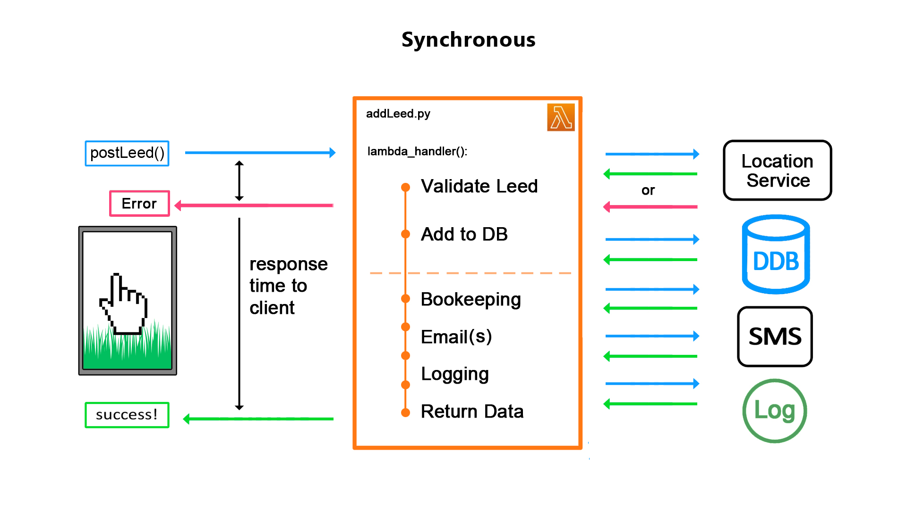
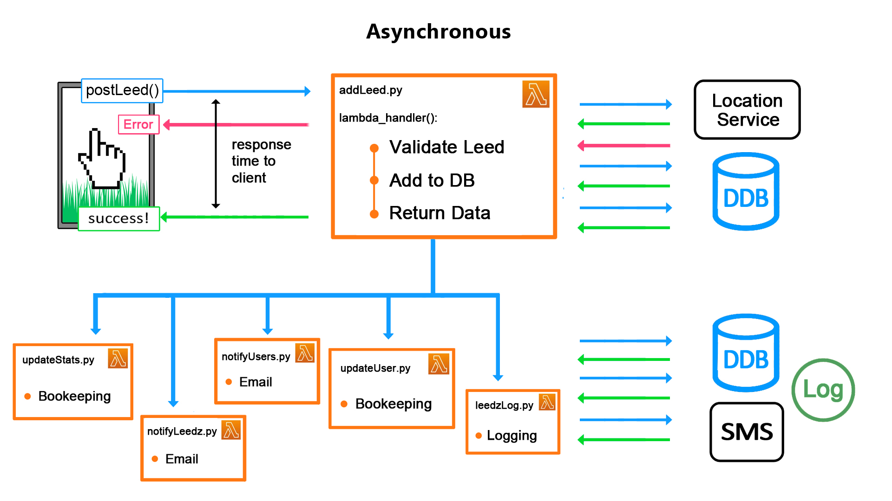
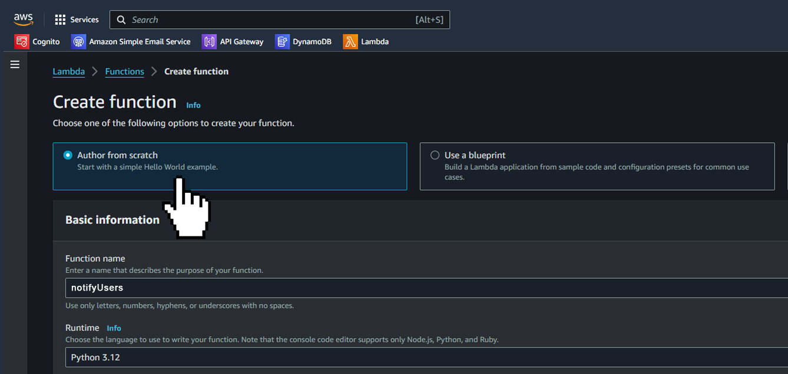
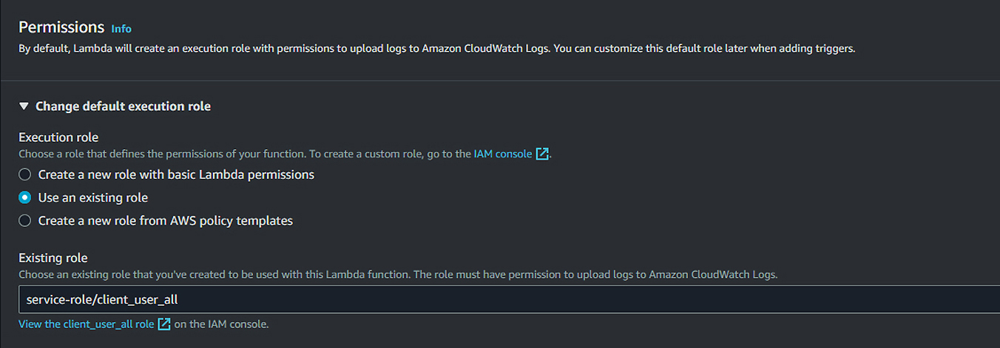
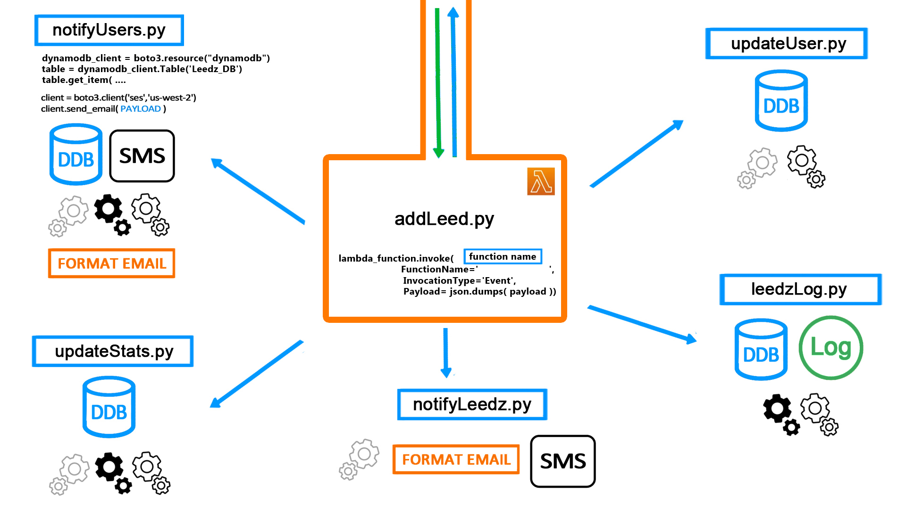
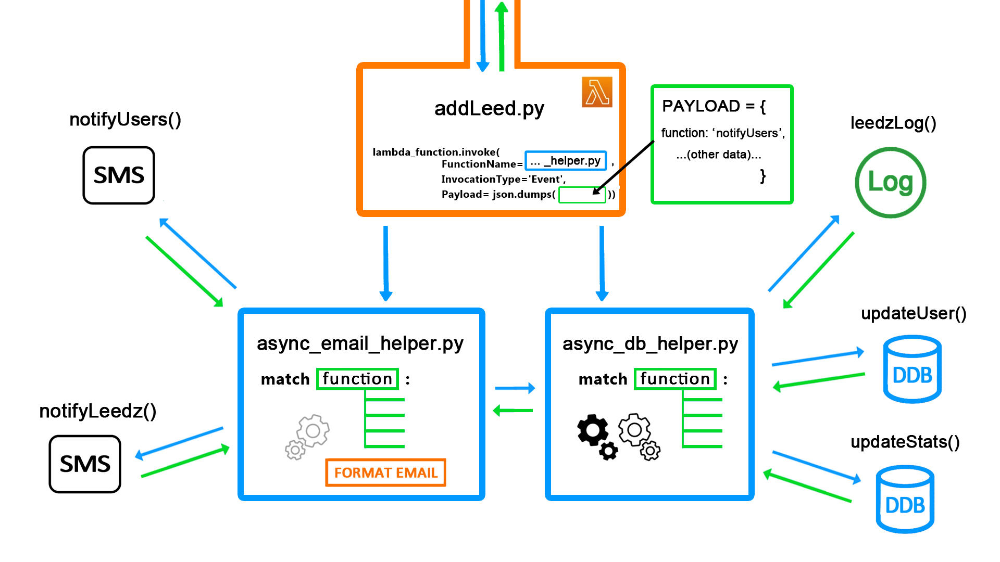

|
April, 2024 Asynchronous Messaging Design Pattern for AWS Lambda Services Optimizing Your Web App with API Gateway Direct Integration Scott
Gross
scottgross.works theleedz.com Overview The Leedz runs on AWS as a collection of Lambda functions which call on resources like DynamoDB and SES, the email sending service. Each time a user posts or buys a leed, the Lambda receiving the API request chains together several subroutines before returning data to the client. Instead of calling these functions serially and making the user wait for them all to return in order, the Leedz does its bookkeeping asynchronously for a better, faster user experience. This paper shows how to do it. The Problem Most client actions trigger a chain of functions and infrastructure service requests on the back-end. When a user posts a leed, for example, the lambda handler calls on AWS Location Service to check for an existing booking matching the same trade, date and location. The client should wait for this check to succeed before proceeding or receive an error code indicating the post has failed.  The dashed line suggests, however, that once a leed has been validated and added to the DB there are other bookkeeping and messaging tasks the user shouldn't have to wait for. For example, sending an email to each of the users subscribed to that trade. The system can compose the response data and return control to the client immediately while performing these additional functions in the background and potentially in parallel.  Functional Code Separation The first step to implementing these helper functions asynchronously is to break them out of the main lambda function and into their own files. This follows the AWS best practice called Functional Code Separation.  In the Lambda console create a new Lambda function for each subroutine and name it according to the task it performs. Under Permissions assign the function an existing IAM execution role or create a new role with default permissions.  In either case the ability to call one function from another is not included by default. In the IAM console click the role attached to the new function, Add Permissions | Create Inline Policy, select the JSON tab, and add the block below: { "Sid": "LambdaCallsLambda", "Effect": "Allow", "Action": "lambda:InvokeFunction", "Resource": "*" }, * 'Sid' is an optional user-generated identifier for the policy The entry-point for each helper lambda function will be its lambda_handler(event, context) function. The event parameter will contain the data passed from the calling function in the main file. notifyUsers.py def lambda_handler(event, context):
leed_id = event['id'] trade_name = event['trade'] seller = event['seller'] # . . . remainder of function . . . Complete the subroutine code and any helper functions it relies upon in the Lambda's Code section and Deploy the function. Best practice dictates creating a Test right away to ensure that if (when) it doesn't work later on, you can more quickly track down the problem in the caller. In the calling Lambda, change the synchronous function calls to a new format that uses the boto3 SDK to broker messaging between Lambdas in different files. The Payload is the application-level dictionary you define with the data the helper requires. It becomes the event parameter of the helper function's lambda_handler above. addLeed.py func_args = { 'id':'123456789', 'trade':'caricatures', 'seller':'scott.gross' } lambda_function = boto3.client('lambda') lambda_function.invoke( FunctionName='notifyUsers', InvocationType='Event', Payload= json.dumps( func_args )) The Invocation-type flag is set to 'Event'. This instructs AWS to execute the function asynchronously, send the payload through the event parameter, and return immediately. To call a function defined in another file synchronously and wait for the return value, use the same code block with InvocationType='RequestResponse' From Spider to Controller The code now looks like a spider with the main controller in the middle calling subroutines on its arms. The problem emerges that each subroutine relies on its own utility functions to process the DB output, pretty-format dates, concatenate strings, format emails, generate HTML and communicate with other AWS services. Often this utility code must be duplicated across files or separated into yet more helper lambda functions.  Each call to lambda_function.invoke() involves marshaling and unmarshaling the same data to and from JSON over and over, much of it unused by the helper function. Multiple redundancies and code duplication frustrate testing and inevitably cause bugs. The legs of the spider end up weighing more than the body. A better solution is to concentrate the shared utility functions and handles to other infrastructure services in a handful of asynchronous controller functions. The controllers delegate tasks to different subroutines in their same scope using a grand match statement in the main lambda_handler and the 'function' parameter of the Payload to determine which function to call. addLeed.py
(main branch)
payload
= { 'function':'notifyUsers', 'id':
'123456789', 'trade':
'caricatures', 'seller':
'scott.gross' } lambda_function
= boto3.client('lambda')
lambda_function.invoke(FunctionName='async_email_helper',
InvocationType='Event',
Payload=
json.dumps( payload )) async_email_helper.py
(controller) def
lambda_handler(event, context):
function_name
= event['function'] match
function_name: case
'notifyUsers':
leed_id = event['id']
trade = event['trade']
seller = event['seller']
notifyUsers(leed_id, trade, seller)
# match function_name to other subroutines below  This
design centralizes the utility functions required to compose emails
and HTML in one file where they can be more easily debugged. The
code for marshalling and unmarshalling JSON need not be repeated as
data can be passed to the subroutines in function arguments. The
main Lambda function can offload 3rd party API calls and
time-intensive processing tasks to asynchronous helpers without
waiting for their completion so long as each subroutine does not
depend on another for its input. They may execute in parallel or
even after the client app has received its response.
Conclusion
As
an AWS app grows and adds more services, a distinction arises between
request-response functions for which the user can be expected to
wait, and those which occur in the background on their own time. The
Asynchronous Invocation Pattern with
controllers aligns
with best practices for AWS Lambda functions. It allows for
efficient utilization of resources and enables parallel processing of
tasks. Functional code separation promotes modularity, which eases
testing and debugging. This design pattern is well-supported by AWS
and integrates with various infrastructure SaaS like Amazon
Cognito, Location, SMS Notification and Email. It is one way in
which the Leedz puts the user experience first. |